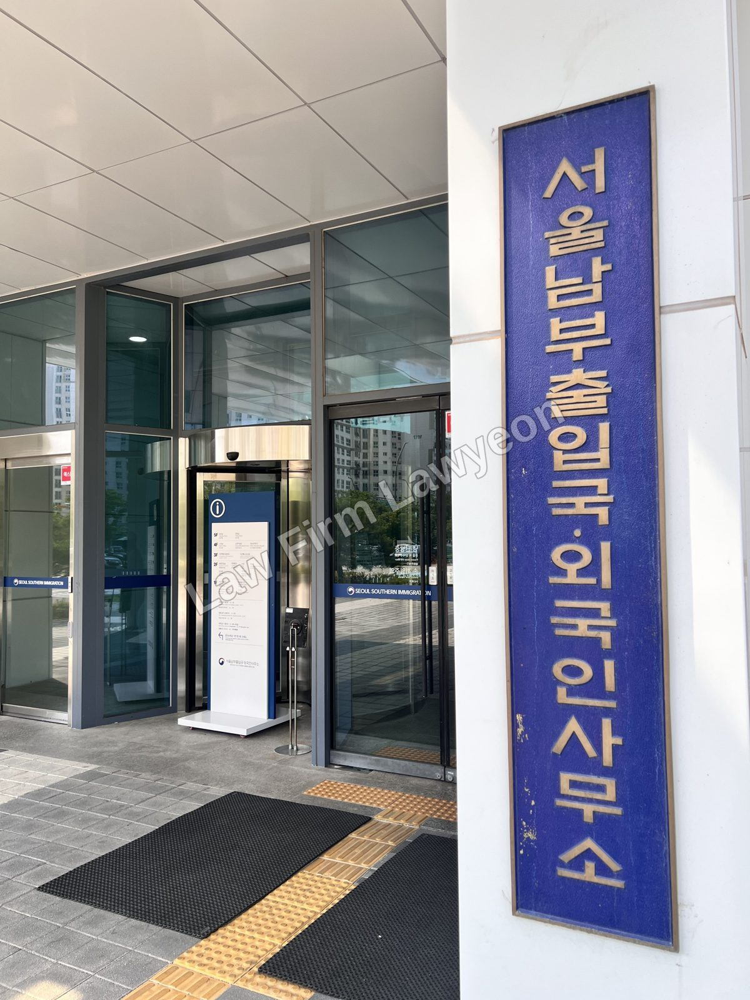

"벌금형이면 형사처벌로 끝나나요?" 그렇지 않습니다. 형사처벌과 별개로 출입국은 같은 사건을 사범심사로 다시 판단하며, 벌금 액수와 죄종이 정해진 기준을 넘는 경우 출국명령이나 강제퇴거가 결정될 수 있습니다. 다만 기준을 넘었다고 하여 결과가 자동으로 확정되는 것은 아니며, 처분의 수위는 국내 가족관계와 체류 기반 등을 고려한 재량 판단에 속합니다.

형사처벌과 사범심사, 출국명령과 강제퇴거
법원에서 벌금형이 확정되면 그 결과가 출입국에 통보되고, 출입국은 해당 외국인의 체류를 계속 허용할지를 다시 심사합니다. 이것이 사범심사이며, 형사 절차와는 별개로 진행됩니다.
사범심사에서 내려지는 강제출국 처분은 두 가지로 구분됩니다. 출국명령은 정해진 기한 안에 스스로 출국할 기회를 주는 완화된 처분으로 보호(구금) 없이 진행되고, 강제퇴거는 보호소 수용을 거쳐 강제로 송환하는 처분으로 더 긴 재입국 제한이 부과됩니다. 금고 이상의 형을 받은 경우에는 강제퇴거 대상이 됩니다.
어느 쪽으로 결정되는지에 따라 재입국 제한 기간 등 이후의 결과가 달라지므로, 처분의 수위를 낮추는 것 자체가 대응의 목표가 됩니다.
강제출국 대상이 되는 벌금 기준
벌금형을 받은 외국인에 대한 강제출국 기준은 다음과 같습니다(2026년 기준).
| 구분 | 기준 |
|---|---|
| 초범 | 벌금 300만 원 이상 |
| 누적(5년) | 합산 벌금 500만 원 이상 |
| 횟수 | 2년 내 2회 이상 / 5년 내 3회 이상 |
| 교통 관련 | 벌금 500만 원 이상 |
| 마약·성범죄 등 | 금액·횟수 무관(출국명령) |
기준에 해당한다고 하여 결과가 자동으로 확정되는 것은 아닙니다. 심사에서는 1) 초범 여부와 위반의 경위 2) 국내 가족관계 3) 체류 기간과 생활 기반 4) 피해 회복·합의 여부가 함께 고려되며, 이러한 사정이 자료로 소명되는 경우 강제퇴거가 출국명령으로 완화되는 등 처분의 수위가 달라질 수 있습니다.
중대범죄와 영구 입국금지
중대범죄로 분류되는 죄종은 벌금 액수와 무관하게 취급됩니다. 내란·외환의 죄, 살인·강간·추행·강도의 죄, 성폭력처벌법·마약류관리법·폭력행위처벌법·보건범죄단속법 위반, 특정범죄가중처벌법 위반(약취·유인, 상습 강도·절도, 강도상해 재범, 보복범죄, 마약사범)이 여기에 해당하며, 기소유예 이상의 처분만 받아도 강제출국과 함께 영구 입국금지 대상이 될 수 있습니다.
또한, 특수공무집행방해, 성폭력·아동청소년 대상 성범죄 관련 위반, 위험운전치상, 보이스피싱 등 정보통신망을 이용한 사기, 사람을 사망에 이르게 한 범죄(과실·업무상 과실 제외)도 같은 취급을 받는 점을 유의하여야 합니다. 같은 벌금형이라도 죄종이 이 범위에 해당하면 금액과 무관하게 강제출국이 검토됩니다.
사범심사의 진행과 불복 절차
벌금이 확정되면 출입국은 당사자를 출석시켜 사범심사를 진행하고, 그 결과로 출국명령·강제퇴거 여부를 결정합니다. 조사 단계의 진술은 조서에 기재되어 처분의 근거가 되며, 한 번 기록된 진술을 이후에 바로잡기는 어렵습니다. 심사에서 반영되는 것은 위반 사실을 부인하는 주장이 아니라, 무거운 처분이 과도하다는 점을 보여주는 객관적 자료입니다.
처분에 불복하는 경우, 출국명령·강제퇴거에 대한 이의신청은 처분서를 받은 날부터 7일 이내에, 취소소송은 처분을 안 날부터 90일 이내에 제기할 수 있습니다. 소송 제기만으로는 처분의 집행이 정지되지 않으므로, 출국을 막기 위해서는 집행정지를 함께 신청하게 됩니다. 강제퇴거 절차에서 보호(구금)된 경우에는 보호일시해제를 별도로 청구할 수 있습니다.
출국명령·강제퇴거로 출국한 경우의 재입국 제한은 출국명령이 사안에 따라 1~5년, 강제퇴거가 최소 5년이며, 중대범죄로 분류된 경우에는 영구 입국금지가 부과될 수 있습니다(2026년 기준).
기준을 넘긴 경우의 판단
예컨대 초범으로 벌금 400만 원이 확정되었고 국내에 배우자와 미성년 자녀가 있는 경우를 상정하면, 기준표만으로는 결과를 판단할 수 없습니다. 벌금 기준으로는 출국명령 대상에 해당하나, 가족관계와 생활 기반이라는 반대 방향의 사정이 함께 존재하기 때문입니다.
이러한 사안의 심사에서는 1) 위반의 경위와 죄종 2) 가족의 체류자격과 부양 관계 3) 체류 기간과 정착의 정도 4) 재범 위험에 관한 사정이 고려되며, 같은 벌금 액수라도 이 요소들의 소명 정도에 따라 결론이 달라질 수 있어 사안별 검토가 필요합니다.
대응의 순서
위 내용을 종합하면, 벌금형이 확정된 때에는 먼저 본인의 벌금 액수·죄종·이력이 어느 기준에 해당하는지 확인하시고, 사범심사 출석 전에 가족관계와 생활 기반에 관한 소명 자료를 준비하시며, 처분서를 받은 때에는 이의신청과 취소소송의 기한 안에 불복 여부를 판단하시는 것이 적절할 것으로 보입니다.
자주 묻는 질문
법무법인 로연 출입국이민지원센터는 법무법인 로연의 출입국·이민 분야 업무 특화 센터로, 체류자격·사증 업무와 형사 사건, 출입국 사범심사 대응을 함께 다룹니다.
센터는 민준우, 남도현, 김승철 변호사와 안태민 센터장의 협업 체제로 운영되며, 형사 절차와 출입국 절차가 겹치는 사안을 하나의 사건으로 검토합니다.
본 글은 일반적인 제도 안내를 목적으로 작성되었으며, 개별 사안에 대한 법률 자문이 아닙니다. 체류자격에 관한 판단은 체류 이력, 소득, 계약 관계 등 구체적 사실관계에 따라 달라질 수 있습니다. 개별 사안의 검토가 필요하신 경우 법무법인 로연 출입국이민지원센터(lawyeonvisa.app)로 상담을 신청하실 수 있습니다.